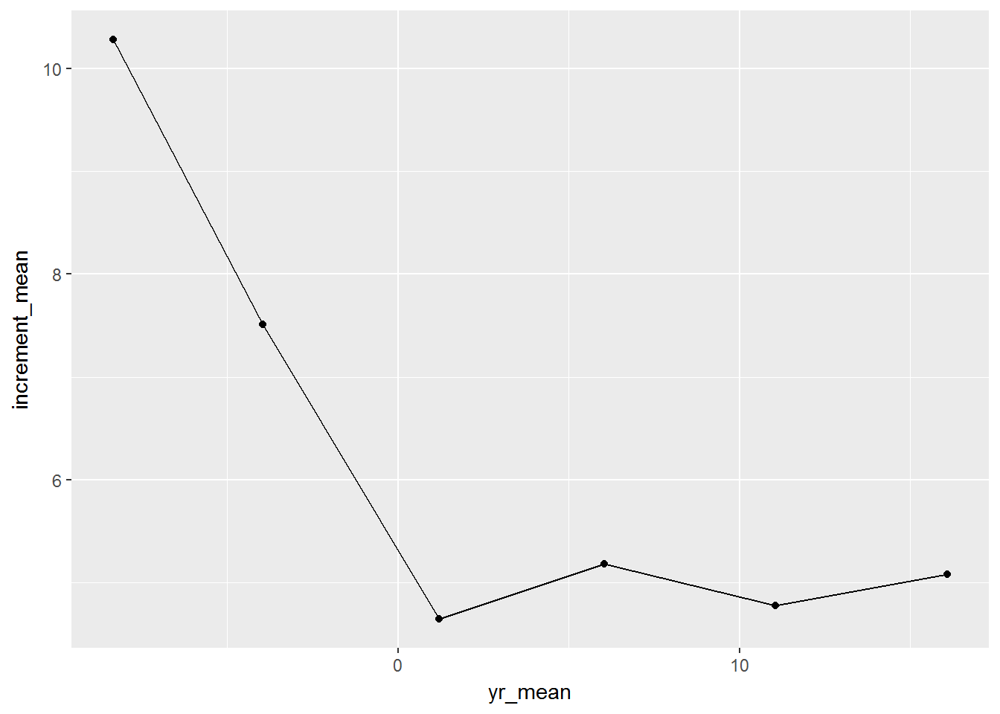
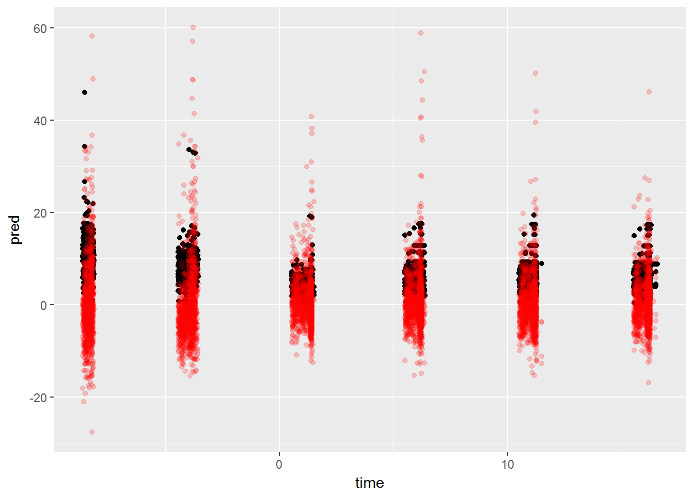
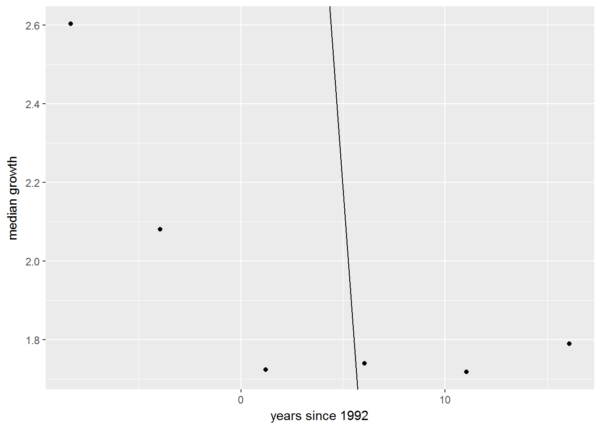

The goal is two fold:
to show how ctfs functions can help you solve problems that may be relevant to you;
to show how to explore research questions in a systematic way, using modern programatic tools and style in the tidyverse (xxxinsert link)
The original version of this tutorial, by Richard Condit, is at https://goo.gl/c9RjMY.
xxx change the focus. Instead of replicating the previous tutorial, use r4ds as a guide to show a generic EDA. This should result in a vignette that is more simple from the analitical viewpoint and more comprehensive from the technical viewpoint. So the audience should be broader, making the vignette more useful than before.
xxx what is the best discusison? HW? Jenny Bryan? maggrittr? …
xxx to address an exploratory data analysis systematically see r4ds “exploratory data analysis”
xxx explain why use the pipe. clear writing comes from position (Goepen xxx). Ideas are clearly communicated if information flows from new old to old, and agents are mapped to subjects, and actions to verbs (Style by Strunk or white?). This structure is impossible with traditional programming
unnatural flow of information
Unclear: flows backwards, from actions to agents, and from new to old information.
sum(x)
action(agent)
verb(subject)
# minimal semantic example
eat(I)
# a longer, more realistic example
sleep(
yawn(
clean(
eat(
I
)
)
)
)Clear: flows forwards, from agents to actions, and from old to new information.
x %>% sum()
agent %>% action()
subject %>% verb()
# minimal semantic example
eat(I)
I %>% eat
# a longer, more realistic example
I %>%
eat %>%
clean %>%
yawn %>%
sleepI refer to code following the conventions of R for data science, by Hadley Wickham & Garrett Grolemund:
Functions are in a code font and followed by parentheses, like
sum(), ormean().
Other R objects (like data or function arguments) are in a code font, without parentheses, like
flightsorx.
If we want to make it clear what package an object comes from, we’ll use the package name followed by two colons, like
dplyr::mutate(), ornycflights13::flights. This is also valid R code.
The question addressed here is how growth has changed with time, in particular how species differ in growth changes. There are two alternative models described:
The functions we use here come with the ctfs and lme4 packages, and the data comes in the bci package. To exploratory data easily we can use the tidyverse and modelr package.
# Links provide installation instructions
library(ctfs) # https://github.com/forestgeo/ctfs
library(lme4) # https://github.com/lme4/lme4/
library(bci) # https://forestgeo.github.io/bci/
library(tidyverse) # xxx insert link
library(modelr) # xxx insert linkTo access functions commonly used for data analysis, load the tidyverse package:
First, let’s table the growth rate of every tree in every census interval. To calculate growth rates for individual trees and table them in the format lmer understands, we use ctfs::individual_grow.table(). individual_grow.table() collects results from several other functions.
# See default arguments, definition of output variables and other details with
# ?individual_grow.table
# Example choosing censuses 1-7
census17_chr <- paste0("bci12full", 1:7)
census17_list <- lapply(census17_chr, get)
grate <- individual_grow.table(
census17_list,
mindbh = 400, maxdbh = 10000 # e.g. with trees of relatively large diameter
)
# Overview
(grate <- as_tibble(grate))
#> # A tibble: 8,594 × 14
#> treeID tag gx gy species dbh1 dbh2 LnSize
#> * <int> <S3: AsIs> <dbl> <dbl> <S3: AsIs> <dbl> <dbl> <dbl>
#> 1 39 000022 989.1 421.3 anacex 1761 1855 1.12953376
#> 2 59 000044 991.8 342.5 loncla 655 670 0.14053188
#> 3 102 000087 985.6 226.5 anacex 426 533 -0.28966401
#> 4 103 000088 983.7 229.4 tri2tu 553 587 -0.02874535
#> 5 104 000089 988.9 232.8 alsebl 642 661 0.12048495
#> 6 117 000102 994.2 185.3 huracr 732 837 0.25167716
#> 7 126 000111 998.0 167.2 loncla 453 478 -0.22821123
#> 8 129 000114 987.0 151.6 huracr 481 543 -0.16823608
#> 9 131 000116 981.7 141.8 tab2ar 499 525 -0.13149726
#> 10 134 000120 987.4 129.4 cavapl 1413 1384 0.90936703
#> # ... with 8,584 more rows, and 6 more variables: incgr <dbl>,
#> # LnGrowth <dbl>, CRGrowth <dbl>, time <dbl>, census <int>,
#> # censusfact <fctr>Second, for each census period, summarize the data to give the mean growth rate of all individuals.
# Table summary
growth_smry <- grate %>%
dplyr::group_by(census) %>%
dplyr::summarize(
yr_mean = mean(time), # mean years since 1992
increment_mean = mean(incgr), # mean of untransformed growth increment
n = n() # count observations
)
growth_smry
#> # A tibble: 6 × 4
#> census yr_mean increment_mean n
#> <int> <dbl> <dbl> <int>
#> 1 1 -8.341837 10.280166 1014
#> 2 2 -3.963116 7.510867 1169
#> 3 3 1.207770 4.644751 1592
#> 4 4 6.046461 5.183409 1633
#> 5 5 11.042803 4.777542 1550
#> 6 6 16.079248 5.080532 1636
# Visual summary
growth_smry %>%
ggplot(aes(x = yr_mean, y = increment_mean)) +
geom_line() +
geom_point()
by_census_interval <- dplyr::group_by(grate, census)
growth_summary <- dplyr::summarize(by_census_interval,
yr_mean = mean(time), # mean years since 1992
increment_mean = mean(incgr), # mean of untransformed growth increment
increment_med = median(incgr), # as above but median
root_mean = mean(CRGrowth), # mean of cube root of growth rate
root_med = median(CRGrowth) # as above but median
)
growth_summary
#> # A tibble: 6 × 6
#> census yr_mean increment_mean increment_med root_mean root_med
#> <int> <dbl> <dbl> <dbl> <dbl> <dbl>
#> 1 1 -8.341837 10.280166 8.380528 2.456828 2.602987
#> 2 2 -3.963116 7.510867 5.092428 1.991760 2.080253
#> 3 3 1.207770 4.644751 3.349970 1.604515 1.722932
#> 4 4 6.046461 5.183409 3.422960 1.731147 1.739726
#> 5 5 11.042803 4.777542 3.326767 1.650958 1.717547
#> 6 6 16.079248 5.080532 3.644401 1.744470 1.789500
# (To refresh definition of variables in grate run ?individual_grow.table)To visualize the growth summary, let’s graph mean growth vs. time. Although you may simply graph the mean growth increment, here I use the mean of the cube-root of growth.
Third, let’s model a linear regression of growth rate vs. time, with species as a random effect. This is equivalent to a hierarchical model, where a Gaussian distribution describes the variation in species responses. As the response variable, we use the cube root of growth. This allows us to come closer to a normal error term while not requiring artificial exclusion of negative growth rates (as a log-tranformation would).
To build the model we can use lme4::lmer() with appropriate formula and data (see ?lmer).
An appropriate formula is:
myformula <- incgr ~ 1 + time + (1 + time | species)After ~, the component “1 + time” means to fit a model of CRGrowth against time, with an intercept (the 1). Next, (1 + time | species) means that the intercept and slope should both be allowed to vary across species. Following the same logic, (1 + time | tag) would account for repeated measures of individuals by using the tree tag (identifying individual trees) as a random effect.
mixed_model <- function(df) {
lmer(incgr ~ 1 + time + (1 + time | species), data = df)
}
modlist <- grate %>%
mutate(uo3 = ifelse(census <= 3, "under3", "over3")) %>%
group_by(uo3) %>%
nest() %>%
mutate(models = purrr::map(data, mixed_model))
# extract coefficients
bind_rows(
fixef(modlist$models[[1]]) %>% enframe() %>% mutate(uo3 = "under3"),
fixef(modlist$models[[1]]) %>% enframe() %>% mutate(uo3 = "over3")
)
#> # A tibble: 4 × 3
#> name value uo3
#> <chr> <dbl> <chr>
#> 1 (Intercept) 5.7550942 under3
#> 2 time -0.7154974 under3
#> 3 (Intercept) 5.7550942 over3
#> 4 time -0.7154974 over3
# add predictions and residuals to data
map2(modlist$data, modlist$models, add_predictions) %>%
map2(modlist$models, add_residuals) %>%
set_names(c("under3", "over3")) %>%
enframe() %>%
unnest() %>%
rename(uo3 = name) %>%
# plot predictions and residuals
ggplot(aes(time, pred)) +
geom_point() +
geom_point(aes(y = resid), colour = "red", alpha = 0.2)
The data is more appropriately split in two than used as a whole, so that we can build two models to describe our data. This seems important because the plot above shows that growth rates through time had a different trend before and since the third census (before, they declined; since, they sabilized). So let’s run two separate models, for censuses ≤ 3 and censuses ≥ 3.
# Split data to capture trends before and since 3rd census
dat3_under <- dplyr::filter(grate, census <= 3)
dat3_over <- dplyr::filter(grate, census >= 3)
# Apply a model function to each component of the split data set
mymodels <- lapply(
list(mod3_under = dat3_under, mod3_over = dat3_over),
function(x) lmer(myformula, data = x)
)
mymodels
#> $mod3_under
#> Linear mixed model fit by REML ['lmerMod']
#> Formula: incgr ~ 1 + time + (1 + time | species)
#> Data: x
#> REML criterion at convergence: 25864.86
#> Random effects:
#> Groups Name Std.Dev. Corr
#> species (Intercept) 3.5801
#> time 0.4733 -0.87
#> Residual 7.2079
#> Number of obs: 3775, groups: species, 108
#> Fixed Effects:
#> (Intercept) time
#> 5.7551 -0.7155
#>
#> $mod3_over
#> Linear mixed model fit by REML ['lmerMod']
#> Formula: incgr ~ 1 + time + (1 + time | species)
#> Data: x
#> REML criterion at convergence: 39270.77
#> Random effects:
#> Groups Name Std.Dev. Corr
#> species (Intercept) 3.956625
#> time 0.002963 1.00
#> Residual 5.060651
#> Number of obs: 6411, groups: species, 112
#> Fixed Effects:
#> (Intercept) time
#> 5.807901 0.005247The key result are the coefficients of each model. The fixed effect gives the forest-wide response, which is the average growth of the species. It is thus not the same as the mean forest-wide growth, because the fixed effect weights each species equally.
To do the same in a more convenient way, we can use the tidyverse. This shows how to manipulate the output of multiple models so that it is easier to visualize and to work with later:
# Same output as mymodel, but easier to visualize and to work with
# (see the pipe operator "%>%" at http://r4ds.had.co.nz/pipes.html)
tidymodels <- mymodels %>% # take mymodels, then transform
lapply(broom::tidy) %>% # from model summmaries to data frames (df), then
tibble::enframe() %>% # from named lists of df to single nested df, then
tidyr::unnest() # from nested df to normal df.
tidymodels
#> # A tibble: 12 × 6
#> name term estimate std.error
#> <chr> <chr> <dbl> <dbl>
#> 1 mod3_under (Intercept) 5.755094174 0.42222709
#> 2 mod3_under time -0.715497356 0.06355431
#> 3 mod3_under sd_(Intercept).species 3.580133791 NA
#> 4 mod3_under sd_time.species 0.473272408 NA
#> 5 mod3_under cor_(Intercept).time.species -0.873486385 NA
#> 6 mod3_under sd_Observation.Residual 7.207897338 NA
#> 7 mod3_over (Intercept) 5.807901217 0.42494908
#> 8 mod3_over time 0.005247249 0.01146385
#> 9 mod3_over sd_(Intercept).species 3.956624741 NA
#> 10 mod3_over sd_time.species 0.002962972 NA
#> 11 mod3_over cor_(Intercept).time.species 1.000000000 NA
#> 12 mod3_over sd_Observation.Residual 5.060650926 NA
#> # ... with 2 more variables: statistic <dbl>, group <chr>The following graph uses the function fixef to get the parameters, then the function curve to add them to the graph. The points are forest-wide means, as graphed above.
tidymodels %>%
select(name, term, estimate) %>%
filter(term %in% c("(Intercept)", "time")) %>%
mutate(term = gsub("^..ntercept.$", "intercept", term)) %>%
spread(term, estimate)
#> # A tibble: 2 × 3
#> name intercept time
#> * <chr> <dbl> <dbl>
#> 1 mod3_over 5.807901 0.005247249
#> 2 mod3_under 5.755094 -0.715497356
mycoefs <- lapply(mymodels, fixef)
ggplot(data = growth_summary, aes(x = yr_mean, y = root_med)) +
geom_point() +
geom_abline(
slope = mycoefs$mod3_under[2],
intercept = mycoefs$mod3_under[1]
) +
geom_abline(
slope = mycoefs$mod3_over[2],
intercept = mycoefs$mod3_over[1]
) +
labs(x = "years since 1992", y = "median growth")
xxxcont
Repository of the Barro Colorado Forest Census Plot Data (version 2012).
Description of the Barro Colorado Forest Census Plot Data.
MOST IMPORTANT
individual_grow.table()
individual_grow.table()
LESS IMPORTANT
individual_grow.table()